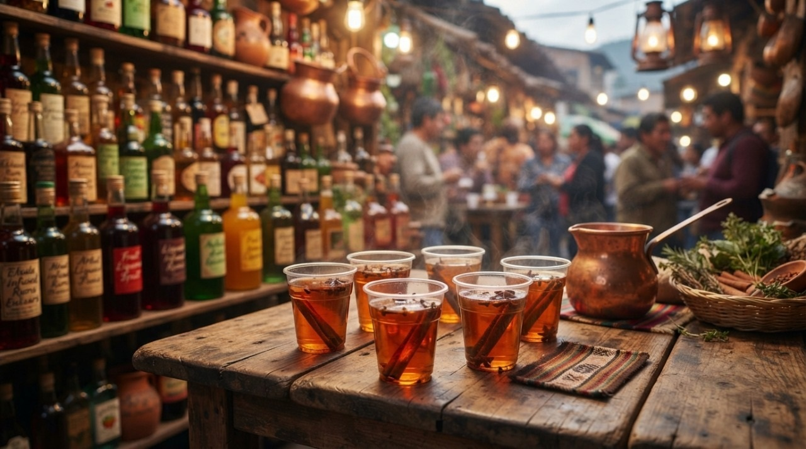

Calentadito Andino

"La bebida por excelencia para combatir el frío del páramo. Un abrazo en forma de infusión."
⏱️ Tiempo: 15 min🔥 Calorías: 150 kcal📊 Dificultad: Fácil
🛒 Ingredientes
👩🍳 Preparación Paso a Paso
- Infusión: Hervir el agua junto con el papelón troceado, la canela y los clavos de olor.
- Hierbas: Al hervir, añadir la manzanilla, tapar y apagar el fuego. Dejar reposar 5 minutos.
- El Toque: Colar la infusión y añadir el Miche Sanjuanero a consideración del preparador.
- Servir: Tomar inmediatamente, bien caliente, en tazas de barro o pocillos de peltre.